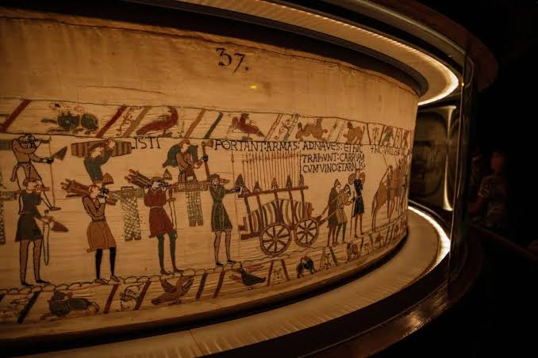
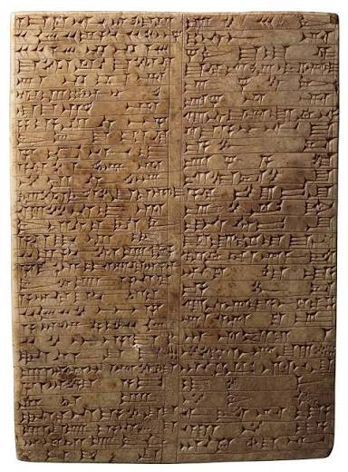

أتعرّف الوثائق التاريخية
مقدمة
كلّ وثيقة لها امتداد زمني في الماضي، وهي تُمثّل المصدر الذي يعتمد عليه المؤرّخ للتعرّف على حياة الأمم والحضارات. وتُصنَّف الوثائق التاريخية إلى صنفين: الوثائق التاريخية الصامتة والوثائق التاريخية المكتوبة.
ما هي أنواع الوثائق التاريخية؟ وما الفرق بين الوثيقة الصامتة والوثيقة المكتوبة؟ وكيف ساهمت الوثائق التاريخية في التعرّف على الحضارات القديمة؟
I الوثائق الصامتة
تتمثّل الوثائق الصامتة في المباني الضخمة التي تعكس تطوّر العمارة والمعمار الروماني والإغريقي والقرطاجي، وتشمل الأواني الفخارية والأسلحة المستخدمة في الحروب والمعارك، والحلي والملابس التي تعبّر عن ثقافة تلك الحضارات القديمة.
II الوثائق المكتوبة
تتجلّى الوثائق المكتوبة في النقوش على الحجارة والنصوص المكتوبة على الجلود والورق، التي تحمل تاريخًا وثقافة وحكايا الأمم والحضارات. ومع التقنيات الحديثة، تمّت طباعة المعرفة على الأقراص الليزرية للحفاظ عليها للأجيال القادمة.
III ملاحظة
ساهمت الوثائق التاريخية في التعرّف على عديد الحضارات التي سبقت واندثرت كالحضارة الإغريقية والرومانية والقرطاجية، من حيث اللغة والدين والعلوم.
خاتمة
تُصنَّف الوثائق التاريخية إلى صنفين: وثائق صامتة (مبانٍ وأوانٍ وأسلحة وحليّ وملابس) ووثائق مكتوبة (نقوش على الحجارة، ونصوص مخطوطة على الجلد والورق، ومطبوعات على الأقراص الليزرية). وقد ساهمت هذه الوثائق في التعرّف على الحضارات القديمة التي اندثرت مثل الحضارة الإغريقية والرومانية والقرطاجية.
📖 تعريفات
📌 أخرى
- الوثيقة التاريخية: كلّ وثيقة لها امتداد زمني في الماضي، وهي المصدر الذي يعتمد عليه المؤرّخ للتعرّف على حياة الأمم والحضارات. وتُصنَّف إلى وثائق صامتة ووثائق مكتوبة.
- الوثيقة الصامتة: هي المباني الضخمة التي تعكس تطوّر العمارة والمعمار الروماني والإغريقي والقرطاجي، وتشمل الأواني الفخارية والأسلحة المستخدمة في الحروب والمعارك والحلي والملابس التي تعبّر عن ثقافة تلك الحضارات القديمة.
- الوثيقة المكتوبة: هي النقوش على الحجارة والنصوص المكتوبة على الجلود والورق، التي تحمل تاريخًا وثقافة وحكايا الأمم والحضارات. ومع التقنيات الحديثة، تمّت طباعة المعرفة على الأقراص الليزرية للحفاظ عليها للأجيال القادمة.
⚔️ حضارات
- الحضارة الإغريقية: من الحضارات التي سبقت واندثرت، وقد ساهمت الوثائق التاريخية في التعرّف عليها من حيث اللغة والدين والعلوم.
- الحضارة الرومانية: من الحضارات التي سبقت واندثرت، وقد ساهمت الوثائق التاريخية في التعرّف عليها من حيث اللغة والدين والعلوم.
- الحضارة القرطاجية: من الحضارات التي سبقت واندثرت، وقد ساهمت الوثائق التاريخية في التعرّف عليها من حيث اللغة والدين والعلوم.
🗺️ وثائق مصوّرة

